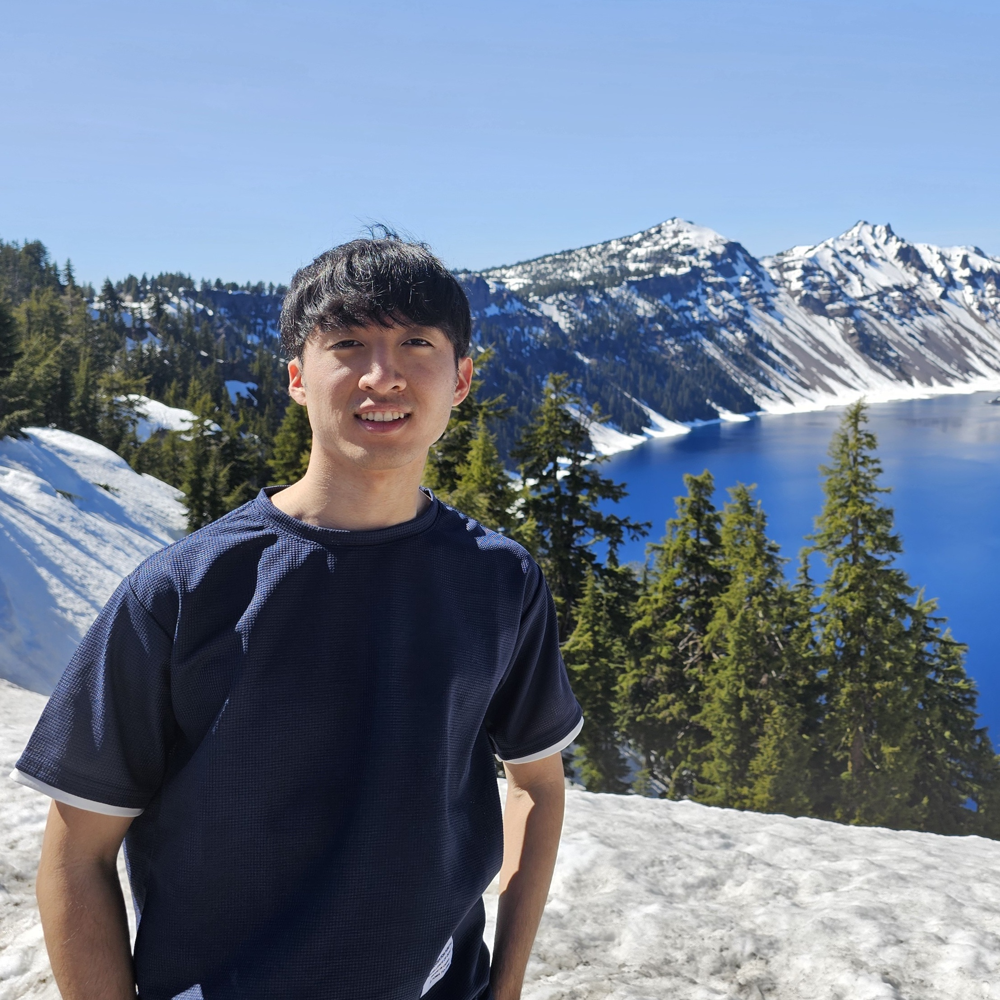
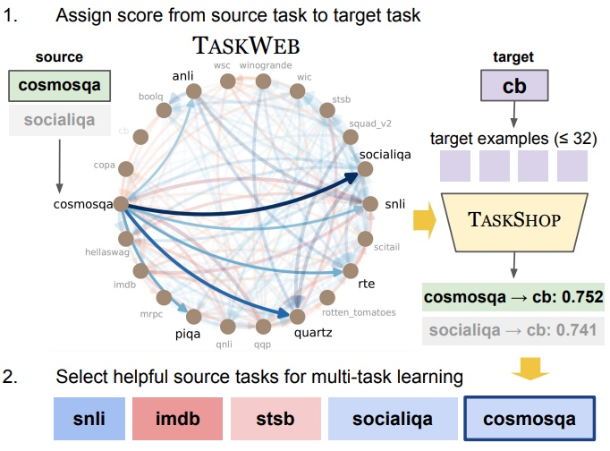
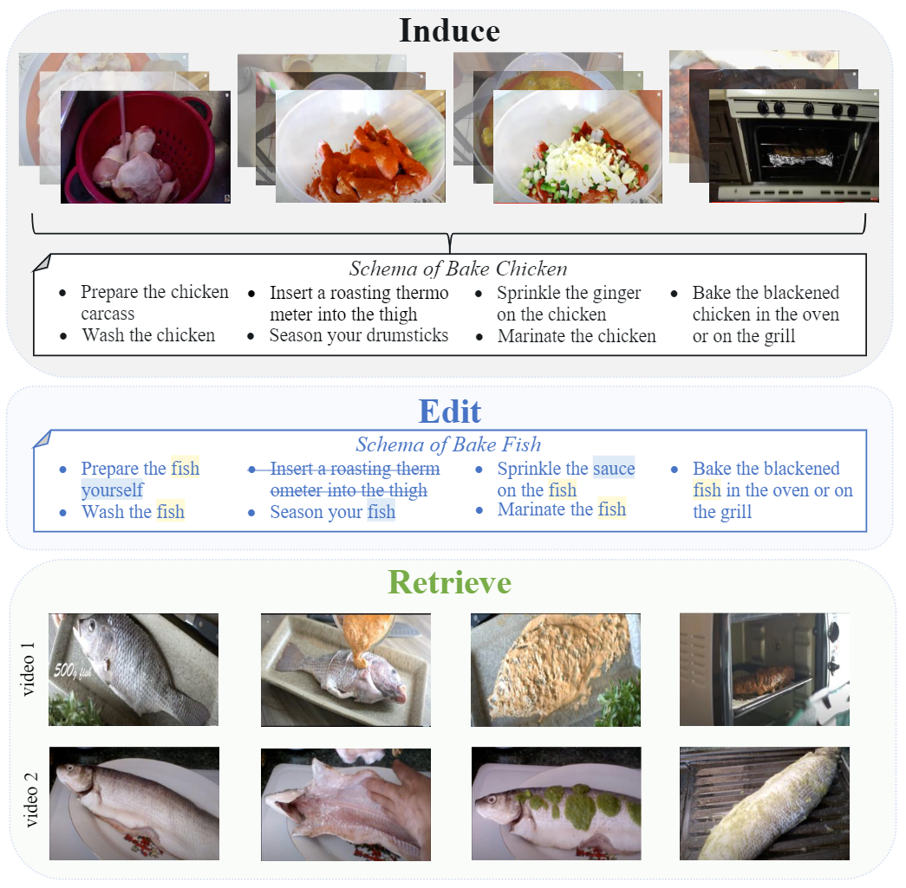
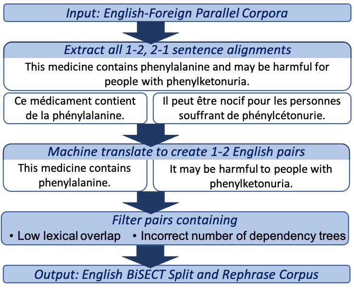

|
Joongwon (Daniel) Kim
I am a second-year Ph.D. student in the Natural Language Processing group at the University of Washington. I am thankful to be advised by Hannaneh Hajishirzi.
Previously, I was an undergrad at the University of Pennsylvania, working with Chris Callison-Burch and Mark Yatskar.
My research interests lie in natural language processing and machine learning, currently in improving open-source LLM performance on complex reasoning tasks with planning and tool usage.
I am supported by the NSF-GRFP Fellowship.
News
CV /
Email /
GitHub /
Google Scholar /
Twitter
|

|
Publications / Pre-Prints
|
|
|
Husky: A Unified, Open-Source Language Agent for Multi-Step Reasoning
Joongwon Kim, Bhargavi Paranjape, Tushar Khot, Hannaneh Hajishirzi
Preprint
Paper |
Code |
Models |
Website
We introduce Husky, an open-source language agent that learns to reason over a unified action space to address multi-step tasks involving numerical, tabular, and knowledge-based reasoning.
Our experiments show that Husky outperforms prior language agents across 14 evaluation sets.
Moreover, we present new evaluation sets that require mixed-tool reasoning and show that Husky matches or even exceeds frontier LMs such as GPT-4 on these tasks despite only using 7B models.
|
|

|
TaskWeb: Selecting Better Source Tasks for Multi-task NLP
Joongwon Kim, Akari Asai, Gabriel Ilharco, Hannaneh Hajishirzi
Proceedings of EMNLP, 2023 (long)
Paper |
Code |
Website |
Video |
Poster
We introduce TaskWeb, our benchmark of pairwise task transfers between 22 different NLP tasks across three different model types, sizes and adaptation method.
Based on TaskWeb, we propose a new method TaskShop for estimating transferability between source and target tasks with only a small number of target examples.
We demonstrate that selecting helpful source tasks with our method allows us to perform multi-task learning on much smaller training sets and still improve zero-shot performance across various target tasks.
|
|

|
Induce, Edit, Retrieve: Language Grounded Multimodal Schema for Instructional Video Retrieval
Yue Yang, Joongwon Kim, Artemis Panagopolou, Mark Yatskar, Chris Callison-Burch
CVPR 2022 @ ODRUM, 2022 (spotlight talk)
Paper
We built schemas for goal-oriented tasks by aligning YouTube videos with wikiHow steps. Then, we proposed methods for editing the schemas to handle unseen but related tasks.
Finally, we leveraged our schemas to perform instructional video retrieval on several datasets and demonstrated that our method improves over other retrieval approaches.
|
|

|
BiSECT: Learning to Split and Rephrase Sentences with Bitexts
Joongwon Kim*, Mounica Maddela*, Reno Kriz, Wei Xu, Chris Callison-Burch
Proceedings of EMNLP, 2021 (long)
Paper |
Code
We curated a multilingual corpus for sentence splitting by using machine translation over parallel corpora. Moreover, we developed a
sentence splitter with controllable generation. We showed that our dataset and model outperformed existing methods in both automatic and human evaluations. Work done in collaboration with Georgia Tech.
|
|
{kind=link}